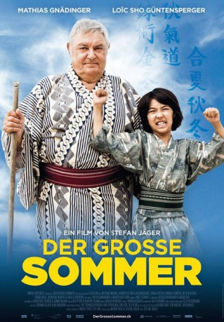

#6933 Grosse Sommer, Der *OmU*
 
 IMDB-Wertung: 6.6 / 10
IMDB-Wertung: 6.6 / 10  Metascore: 0
Metascore: 0 
Seine letzte grosse Reise führte ihn von Stein am Rhein ins ferne Japan. Theo Plakoudakis und Marco Salituro hatten für Mathias Gnädinger eigens das Drehbuch entwickelt. Und so füllte der populäre Schauspieler die Rolle als «grosser Sommer» mit viel Herz aus: Der ehemalige Schwingerkönig Anton Sommer wird vom zehnjährigen Buben Hiro gezwungen, ihn nach Japan zu begleiten. Hiro will wie sein Vater Sumo-Ringer werden. Der Zürcher Stefan Jäger inszenierte ein modernes Märchen, das zur liebenswürdigen Hommage an Mathias Gnädinger wurde. Er starb am Karfreitag 2015.
Jahr: 2016
Dauer: 99 Minuten
FSK: 12
Land: Schweiz Studio: Impuls PicturesTonspuren:
Untertitel: Deutsch,
Auflösung: 1080p (1920x800) Größe: 3737 MB
Genre: Komödie
Regisseur: Stefan Jäger
Drehbuch: Theo Plakoudakis
Soundtrack:
Darsteller:
- Reto Stalder als Hofer
- Mathias Gnädinger als Anton Sommer
- Loïc Sho Güntensperger als Hiro Akiba
- Mitsuko Baishô als Masako
- Tomio Suga als Bunta
- Hanspeter Müller als Müri
- Sonja Riesen als Zgraggen
- Monica Gubser als Frau Beck
- Gilles Schyvens als Anton Sommer, 1964
- Jonathan Loosli als Kurt Mäder
Datei: X:\2016(G-M)\Grosse Sommer, Der OmU (2016, FSK12, 1920x800).mkv seit 08.09.2017
Festplatte: HD 2016(A-Z)
 Es gibt insgesamt 164 Filme in der Gruppe '2016(G-M)'
Es gibt insgesamt 164 Filme in der Gruppe '2016(G-M)'